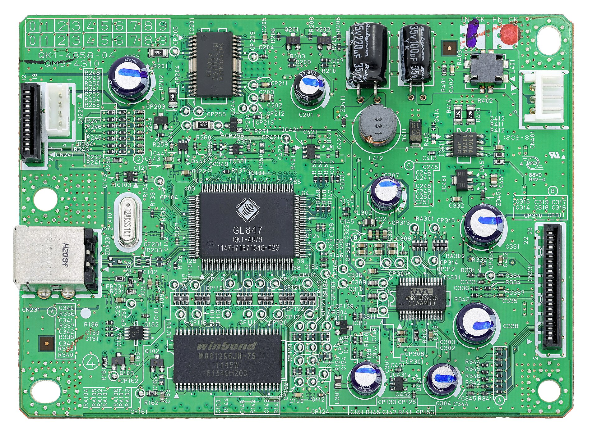

Writes the prompts that test generative and agentic AI models, builds the rubrics that grade them, and rates the answers.
Oct 2026 to present +
Writes original prompts and tasks that push a model to show what it can and cannot do, each with clear instructions and constraints.
Builds the evaluation criteria for every task: a rubric that spells out a good answer, and an answer key so responses are graded the same way every time.
Rates responses against those rubrics, compares outputs side by side, and backs each rating with a written, evidence-based justification.
Reviews AI-written code and technical answers for correctness, flagging exactly where they go wrong.
Manages workload and deadlines independently across projects.
Video annotation specialist
micro1, freelance, remote
Reviews video clips against their captions and reports every mismatch, missing event and inconsistency.
Oct 2026 to present +
Reviews video clips to assess caption accuracy and alignment with the visual content.
Identifies and categorizes caption mismatches, missing events and descriptive inconsistencies.
Writes detailed reports on annotation errors and discrepancies to support quality improvement.
Follows annotation guidelines to keep AI training data consistent and accurate.
AI data specialist, Tamil
RWS Group, freelance, remote
Evaluates and ranks AI-generated Tamil and English responses for accuracy, fluency and cultural fit.
Jul 2026 to present +
Evaluates AI-generated responses in Tamil for accuracy, relevance, fluency and cultural appropriateness.
Performs RLHF (reinforcement learning from human feedback) tasks by comparing, ranking and assessing model outputs.
Identifies factual, linguistic and contextual issues and logs clear, actionable written feedback.
Applies project-specific guidelines and checklists independently for consistent evaluations.
Keeps to productivity and quality standards while meeting project deadlines.
Analyst, AI/LLM practice
Innodata Inc., hybrid
Generalist LLM trainer and data annotator on AI training data pipelines.
Dec 2025 to Sep 2026 +
Rated AI-generated responses for quality, accuracy, relevance, safety and instruction-following across diverse task types.
Annotated text data for LLM training: classification, named entity recognition, intent labeling and instruction-response pairs.
Delivered structured RLHF and multi-turn free-text evaluation to guide model fine-tuning.
Reviewed and debugged multimodal annotations, resolving ambiguous edge cases through structured troubleshooting.
Kept consistency and accuracy across large-volume annotation batches.
Worked with quality analysts and project leads to refine guidelines and meet quality and productivity KPIs.
MLOps intern
IntersectIQ, remote
Built training datasets and YOLO object detection models for industrial safety monitoring.
Mar to Jun 2025 +
Performed polygon annotation and bounding-box labeling on industrial images using LabelMe and LabelImg.
Built and trained three YOLO (v5 and v8) object detection models for conveyor-belt obstacle detection, analyzing precision, recall and mAP.
Handled the full dataset pipeline in Python: collection, cleaning, resizing, augmentation, balancing and quality validation.
Contributed to a real-time detection pipeline for automated safety monitoring in industrial environments.
About a year of evaluation work across text, image and video, following detailed guidelines and making the judgment calls on ambiguous cases.
Skills by kind of work
LLM evaluation
Rating and ranking what models write, against written rubrics, with a justification for every score. Used at Handshake AI and RWS, and before that at Innodata.
RLHF
Response rating and ranking
Side-by-side comparison
Prompt and task writing
Rubric and answer-key design
Instruction-following checks
Safety and policy compliance
AI-written code review
Annotation
Labeling text, images and video to guideline, consistently and at volume: text at Innodata, video captions at micro1, industrial images at IntersectIQ.
Text classification
Named entity recognition
Intent labeling
Multi-turn evaluation
Video caption review
Polygon annotation
Bounding boxes
LabelMe
LabelImg
Roboflow
Linguistic QA
Native Tamil with full cultural fluency and business-level English, applied to reviewing content for language, fact and context.
Tamil (native)
English (business-level)
Fluency and factual review
Cultural appropriateness
Style-guide adherence
Content and metadata review
Defect logging and feedback
Escalation of ambiguous cases
Data and tools
A B.Tech foundation in Python and data work, used for preprocessing, validation and model training during the MLOps internship and in both projects.
Python (Pandas)
SQL
Git
Object-oriented programming
Data cleaning and validation
Exploratory data analysis
YOLOv5 and YOLOv8
Streamlit
Matplotlib
Excel and Google Sheets
Professional
The habits that repetitive, high-volume review depends on, working independently and with global, cross-functional teams.
Attention to detail
Time management
Prioritization
Problem solving
Cross-functional collaboration
Self-managed remote work
Adapting to changing processes

Two projects built in Python
Vehicle data visualization dashboard
A Streamlit dashboard for exploring an Indian car dataset: how specifications, prices and performance vary across makes, body types and fuel types. Built as a structured exploratory data analysis, the step before any model is trained.
Filters for make, body type, fuel type and price range, with the filtered data exportable from the dashboard.
Preprocessing that cleans the data and standardizes every price into lakhs.
Comparisons of price, power, torque and displacement, a pairwise view of the core specifications, and a correlation heatmap.